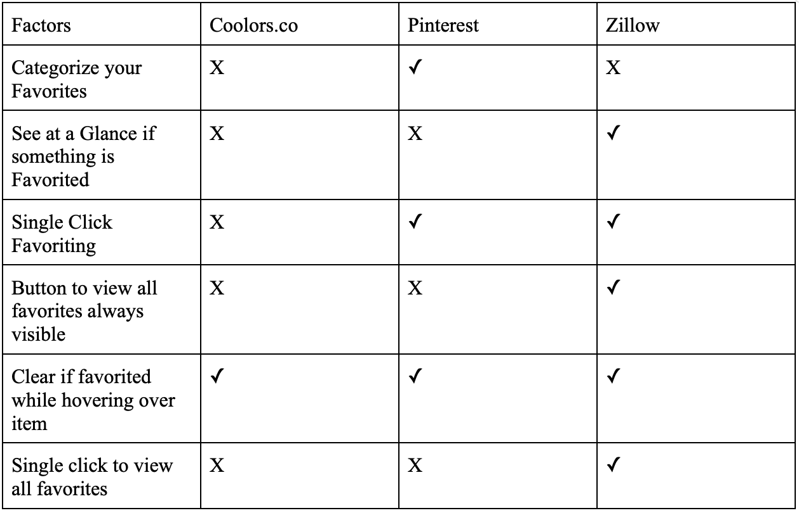

Generally it seems like there is some agreement across platforms as to what successful favoriting features are. While 1 of the 3 websites did not have single click favoriting, they all had an obvious and visible way to start the favoriting process. Some required hovering and others showed the favorite symbol at all times. There was some disagreement in terms of terminology that I found just a bit confusing. Pinterest uses a button that says saved whereas Zillow uses a heart icon. I originally thought the heart icon would lead to a favorites page, but when you heart a house it goes to your saved houses. I felt like the heart icon was not the best choice for this. Coolers had an obvious way to favorite something, but it prompted a pop up window where you had to input a name for what you were favoriting. This makes it hard to just scroll and like things seamlessly. Pinterest and Zillow on the other hand make it very easy to like things so liking does not interfere with the browsing. Categorized favorites was a very successful feature on Pinterest. Pinterest guesses what category you might want to put something in so you can categorize it with one click. However, if Pinterest incorrectly guesses what category you want to put something in, then you. In all cases, changing the visual of the favorites icon was clear and effective. They all had an effective visual hierarchy as the favoriting buttons were visible, but clearly secondary to the visibility of the actual item being favorited.
The intention of my app is to help users find shoes that best fit their style. Shoes come in many forms so sorting becomes very important. Users of my app can sort by price, filter by style, filter by brand, or filter by color. These are all crucial components of any shoe purchase. Once the user has found their shoe, they can easily put it in their cart, which tracks their choices clearly.